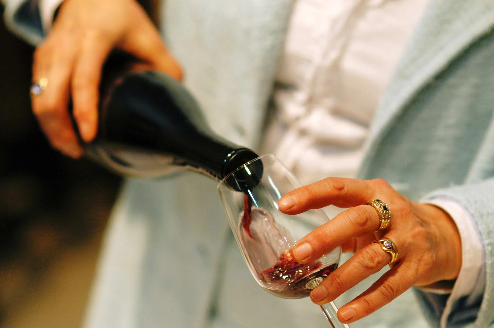
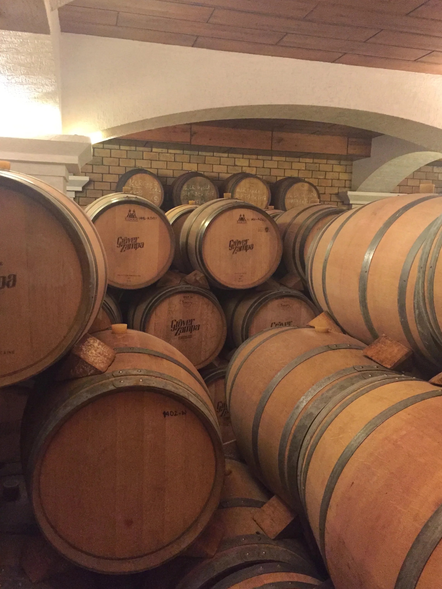

Ardoak Ardoak
Eguneroko etxeko ardotik ospakizunetako erreserbara: Nafarroako eta Errioxako ardoak ostalaritzarako hautatuak, asteroko banaketarekin zure lokalera.
Gure aukeraketa
Zure kartak merezi duen ardoa
Barran eta mahaian ondo funtzionatzen duten upategiekin lan egiten dugu: Nafarroako garnatxak eta tempranilloak, Errioxako ondu eta erreserbak, zuri freskoak eta Nafarroako gorriak. Eta udarako, sangria prest zerbitzatzeko.

Erreferentziak
Katalogoa: ardoak
Hauek dira gure ohiko erreferentziak. Agertzen ez den zerbaiten bila bazabiltza, deitu: lortuko dugu.
Mahai-ardoak · Ardo arruntak 10 erreferentzia
- RIOTINTO BELTZA ROSCA 3/4
- RIOROSO GORRIA ROSCA 3/4
- RIOBLANCO XURIA ROSCA 3/4
- VIÑA ALTA BELTZA 3/4 RET
- MOSTO VIDA LT. N.R.
- MOSTO VIDA BLLIN 200
- VIÑACRUZ BELTZA LT N.R
- TABERNA BELTZA LT. NR
- TABERNA GORRIA LT. NR
- IBERO XURIA Lt N.R.
Nafarroako ardoak · Nafarroako ardoak 50 erreferentzia
Urtekoak · Urtekoak
- VIÑA CAMPUS
- ALAIZ BELTZA
- SEÑORIO IRATI BELTZA
- CASTILLO OLITE BELTZA
- CAMPANAS TEMPRANILLO
- EGIARTE
- HOMENAJE BELTZA
Haritza
- VIÑA PERGUITA
- INURRIETA NORTE
- INURRIETA SUR
- MARCO REAL SYRAH
Gorria · Gorria
- VIÑA CAMPUS GORRIA
- ALAIZ GORRIA
- SEÑORIO IRATI GORRIA
- CASTILLO OLITE GORRIA
- NAVASCAL GORRIA
- CAMPANAS GORRIA
- SARRIA GORRIA
- HOMENAJE GORRIA
- GRAN FEUDO GORRIA
- INURRIETA GORRI MEDIODIA
Xuria · Xuria
- ALAIZ XURIA
- SEÑORIO DE IRATI XURIA
- CASTILLO DE OLITE XURIA
- HOMENAJE XURIA 3/4
- CAMPANAS XURIA
- MORALEDA XURIA
- CHARDONNAY
- INURRIETA XURI ORCHIDEA
- MARCO REAL CHARDONNAY
- INURRIETA XURI CUVEE
Ondua · Ondua
- VIÑA RECUERDO CR
- NAVASCAL CR
- MORALEDA CR
- CAMPANAS BELTZA CR
- SARRIA BELTZA CR
- MARCO REAL CR
- AROA JAUNA CR
- EGIARTE CR
- CASTILLO DE OLITE 1864 CR
- INURRIETA CR
- CUATROCIENTOS
- PAGO CIRSUS V.
- SELECCIONADA
- LEZAUN CR
Erreserba · Erreserba
- CAMPANAS RE
- MARCO REAL RE FAMILIA
- ALTOS DE INURRIETA RE
- INURRIETA LADERAS
- SEÑORIO SARRIA GR
Errioxako ardoak · Errioxako ardoak 54 erreferentzia
Beltza · Beltza
- SEÑORIO UÑUELA
- HEREDERO
- MONTEBUENA
- MARQUES CACERES BIO
CVC
- CAMPO VIEJO
- SIGLO 1881
- SIGLO
- SIGLO SACO
Gorria · Gorria
- MARQUES CACERES GORRIA
- BERONIA GORRIA
- AZPILICUETA GORRIA
Ondua · Ondua
- VIÑA EDERRA CR
- CAMPO VIEJO CR
- VIÑA ALCORTA CR
- MONTECILLO CR
- COTO CR
- HACIENDA LOPEZ DE HARO CR
- BERONIA CR
- VIÑA POMAL CENTENARIO CR
- CUNE CR
- AZPILICUETA CR
- CONDE DE VALDEMAR CR
- VIÑA SALCEDA CR
- BERONIA CR EDICION LIM.
- MARQUES CACERES CR
- LAN CR
- RAMON BILBAO CR
- MARQUES VILLAMAGNA CR
- AZPILICUETA ORIGEN CR
- OINOZ CR
- MUGA CRIANZA
- VIÑA ALCORTA CR MAGNUM 1500
- COTO CR MAGNUM 1500
- BERONIA CR MAGNUM 1500
- AZPILICUETA CR MAGNUM 1500
- RAMON BILBAO CR MAGNUM1500
Erreserba · Erreserbak
- VIÑA ALCORTA RE
- CAMPO VIEJO RE
- COTO DE IMAZ RE
- AZPILICUETA RE
- MARQUES CACERES RE
- BERONIA RESERVA
- VIÑA POMAL RE
- MARQUES VILLAMAGNA RE
- EGOMEI RE
- MARQUES RISCAL RE
- FELIX AZPILICUETA C.PRIVADA
- YSUIS RE
- GAUDIUM RESERBA
- EGOMEI ALMA
Erreserba haundia · Erreserba haundiak
- MARQUES VILLAMAGNA GR
- BERONIA GR
- MARQUES CACERES GR
- LA VICALANDA GR
3/8 eta 50 cl botilak · Ardo botila erdiak 12 erreferentzia
- CAMPO VIEJO BELTZA 3/8
- VIÑA ALCORTA CR 3/8
- AZPILICUETA CR 3/8
- COTO CR 3/8
- BERONIA CR 3/8
- CUNE CR 3/8
- MARQUES CACERES CR 3/8
- VIÑA ALCORTA CR 50cl
- VIÑA POMAL CR 50cl
- VIÑA POMAL RE 50cl
- MARQUES CACERES 3/8 GORRIA
- ARDO BOTILA ERDIAK 3/8 KOAK
Sangriak · Sangriak 6 erreferentzia
- REAL SANGRIA LITRO 7,5º
- SANGRIA MAISON 1.5
- REAL SANGRIA 1.5 L.7,5º
- REAL SANGRIA 3LT BAG IN BOX
- LOLEA SANGRIA GORRIA 75cl
- LOLEA SANGRIA XURIA 75cl

Zerbait jakin baten bila?
Zerrendan ez badago, lortuko dugu
Upategi jakin bat zure kartarako? Formatu berezi bat ekitaldi baterako? Esan iguzu eta bilatuko dugu. 1949tik ari gara eskualdeko ostalaritzak behar duena lortzen.
Arakatzen jarraitu
Katalogo osoa